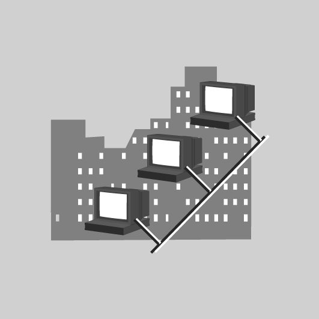

Adreçament IP
L’adreçament IP es fa servir per poder identificar ordinadors i d’altres dispositius. Aquest es basa, per una banda, en la pròpia direcció del equip que l’identifica quan es comunica amb la resta d’equips i la màscara de xarxa que permet saber si un altre equip amb el que ens hem de comunicar esta dins de la mateixa xarxa o bé cal fer ús d’algun encaminador per tal de d’establir-hi una comunicació.
En el cas que la direcció amb la qual ens haguem de comunicar no estigui directament connectat al equip, caldrà consultar la taula de rutes. En aquesta taula hi constaran les xarxes per les quals haguem de passar per algun encaminador en concret i finalment una entrada amb el nostre encaminador per defecte.
Encapçalament IP
Tota la informació que es vol transmetre s’ha d’empaquetar en datagrames, unitats que es transmetran per la xarxa. Perquè arribin a la destinació, cal empaquetar la informació mitjançant el protocol IP, el qual hi afegeix uns camps de control anomenats encapçalaments que contenen tota la informació de la màquina d’origen i de destinació.
Un dels camps més importants a l’hora de transmetre la informació per Internet és l’encapçalament IP: el protocol hi afegeix una sèrie de dades importants perquè pugui circular per la xarxa i arribar a la destinació.
Com veiem en la figura, l’encapçalament IP està format per diferents camps:
IPHL: IP head length.
- Versió: és un camp de quatre bits que indica la versió del protocol. Per paquets IPv4 es faria servir el valor 4 i de la mateixa manera seria el 6 si el paquet és IPv6.
- IHL: indica la longitud de l’encapçalament IP. Serveix per saber en quin punt exacte comencen les dades que es volen transmetre.
- Tipus de servei (type of service): especifica la qualitat de servei desitjada per aquest paquet, utilitzant 8 bits (figura).
Els significats dels bits del tipus de servei i un exemple d’ús, els podeu veure a la taula i taula, respectivament.
Significat dels bits
D = 1 Poc retard T = 1 Cabal alt R = 1 Fiabilitat alta M = 1 Cost econòmic baix
| D | T | R | M | |
|---|---|---|---|---|
| 0 | 0 | 0 | 0 | Defecte |
| 0 | 0 | 0 | 1 | Minimitzar el cost monetari |
| 0 | 0 | 1 | 0 | Maximitzar la fiabilitat |
| 0 | 1 | 0 | 0 | Maximitzar el cabal |
| 1 | 0 | 0 | 0 | Minimitzar el retard |
| 1 | 1 | 1 | 1 | Maximitzar la seguretat |
| D | T | R | M | |
|---|---|---|---|---|
| TELNET | 1 | 0 | 0 | 0 |
| FTP control | 1 | 0 | 0 | 0 |
| FTP dades | 0 | 1 | 0 | 0 |
| SNMP | 0 | 0 | 1 | 0 |
| NNTP | 0 | 0 | 0 | 1 |
- Longitud total (total lenght): especifica la longitud total del paquet incloent-hi les dades i l’encapçalament.
- Identificació (identification): identifica el número de seqüència del datagrama. En el cas que el paquet es divideixi en fragments més petits per circular per una xarxa que tingui una unitat de transmissió més petita, identifica el número de fragment per tal de reconstruir el paquet original al arribar a la destinació.
- Assenyalador (flags): és un camp de tres bits (figura) en què els dos bits de menys pes controlen la fragmentació dels paquets. Un bit identifica si el paquet es pot fragmentar, i l’altre si és l’últim fragment de paquet o no.
- Desplaçament de fragment (fragment offset): Indica la posició que ocupa el fragment actual en el paquet original mitjançant 13 bits.
- Temps de vida (Time To Live): aquest camp determina el temps de vida del paquet o, dit d’una altra manera, els salts (passos per encaminadors) que pot fer un paquet. Cada vegada que travessa un encaminador, el valor que hi ha en aquest camp es decrementa en una unitat. Aquest camp és necessari perquè no quedin paquets voltant per la xarxa sense trobar la destinació.
- Protocol: indica quin protocol de capa superior ha generat el paquet. Els protocols que pot utilitzar són els que es poden veure en la taula.
| Decimal | Hexadecimal | Protocol | Descripció |
|---|---|---|---|
| 1 | 01 | ICMP | Protocol de missatges de control per Internet (Internet control message protocol) |
| 2 | O2 | IGMP | Protocol d’administració del grup Internet (Internet group management protocol) |
| 3 | 03 | GGP | Protocol de passarel·la a passarel·la (gateway- to-gateway protocol) |
| 4 | 04 | IP | Protocol d’Internet |
| 6 | 06 | TCP | Protocol de control de transmissió (transmission control protocol) |
| 8 | 08 | EGP | Protocol de passarel·la exterior (exterior gateway protocol) |
| 9 | 09 | IGP | Protocol de passarel·la interior (interior gateway protocol) |
| 17 | 11 | UDP | Protocol de datagrama d’usuari (user datagram protocol) |
| 29 | 1D | ISO-TP4 | ISO transport protocol 4 |
| 88 | 58 | IGRP | Internet gateway routing protocol (Cisco) |
| 89 | 59 | OSPFIGP | Open shortest paht first protocol |
- Suma de verificació d’encapçalament (header checksum): bits de control per saber si existeix algun error de transmissió en l’encapçalament del paquet IP.
- Adreça d’origen (source address): especifica l’adreça de la màquina que ha generat el paquet.
- Adreça de destinació (destination address): especifica l’adreça de la màquina a la qual es volen enviar les dades.
- Opcions i farciment (options and padding): les opcions, si n’hi ha, permeten que admeti seguretat, o longitud variable. En el farciment s’hi afegeix zeros perquè l’encapçalament sigui múltiple de 32 bits.
Després d’aquest encapçalament es troben les dades que es volen transmetre.
Classes d'adreça IPv4
L’adreça IP és un nombre de 32 bits que identifica cada una de les màquines que estan connectades a Internet o a qualsevol xarxa, i també la xarxa a la qual estan connectades. Una part de l’adreça IP, segons la seva màscara de xarxa, serveix per identificar la xarxa, sent el tros restant de la direcció IP la que identifica la màquina (figura).

Per poder separar el camp que identifica la xarxa del camp que identifica la màquina, s’ha d’aplicar una màscara de xarxa. És a dir, al aplicar la operació lògica AND entre la màscara de xarxa i l’adreça IP s’obté la xarxa.
La notació de l’adreça IP són quatre xifres menors o iguals a 255 separades per punts. Per poder calcular l’adreça de xarxa caldrà passar les quatre xifres de forma independent a binari. Per exemple l’adreça 192.168.2.23 en binari seria:
Operació AND
Una operació lògica AND té com a resultat: 0 AND 0 = 0 0 AND 1 = 0 1 AND 0 = 0 1 AND 1 = 1
192.168.2.23 = 11000000.10101000.00000010.00010111
La màscara de xarxa resulta molt més simple ja que sempre seran un conjunt de uns al principi i en algun punt canviaran a zeros:
255.255.0.0 = 11111111.11111111.00000000.00000000
Els valors possibles de la màscara de xarxa són els que es mostren a la taula.
| Valor en decimal | Valor en binari |
|---|---|
| 255 | 11111111 |
| 254 | 11111110 |
| 252 | 11111100 |
| 248 | 11111000 |
| 240 | 11110000 |
| 224 | 11100000 |
| 192 | 11000000 |
| 128 | 10000000 |
| 0 | 00000000 |
Aplicant l’operació lògica AND, s’obté el següent resultat:
11000000.10101000.00000010.00010111 ^ 11111111.11111111.00000000.00000000 = = 11000000.10101000.00000000.00000000
D’aquest resultat s’obté l’adreça de xarxa, en binari 11000000.10101000.00000000.00000000, és a dir, 192.168.0.0 en decimal. Per tant, el valor dels dos últims octets és l’identificador de l’equip.
Depenent de la quantitat de bits que s’utilitzin per identificar la xarxa, es classifica dintre d’un tipus o d’una altra.
Hi ha tres classes principals d’adreces IP:
- Adreça de classe A: el primer octet identifica la xarxa.
- Adreça de classe B: els dos primers octets identifiquen la xarxa.
- Adreça de classe C: els tres primers octets identifiquen la xarxa.
A més de dues classes addicionals que es tracten per separat:
- Adreça de classe D: Es tracta d’un conjunt d’adreces reservades per multidifusió.
- Adreça de classe E: Es tracta d’una classe reservada.
Adreça de classe A
En una adreça de classe A el primer octet identifica la xarxa i el bit que pesa més sempre té el valor de 0. Els 7 bits següents identifiquen la xarxa, i la resta de bits —és a dir, 24— identifiquen les màquines connectades. Aquesta combinació fa que la primera xarxa sigui la 0.0.0.0 i l’última, la 127.255.255.255. Amb adreces de classe A es poden implementar poques xarxes, però cada xarxa pot incloure molts equips.
Una adreça de multidifusió té com a destinataris un subconjunt dels possibles destinataris de la xarxa. Multidifusió és el mateix que multicast o difusió selectiva, que es veu a l’apartat “Adreça de classe D”.
Si s’utilitzen 7 bits per identificar les xarxes, podreu obtenir 27 xarxes (128 xarxes), a cada una de les quals es poden connectar 224-2 màquines (concretament, 16.777.214 màquines).
Adreça de classe A
Es poden implementar poques xarxes i molts equips per cada xarxa.
Xarxes < 128
Dispositius > 65.535
Amb una adreça de classe A, es poden implementar 128 xarxes i connectar-hi uns 16 milions d’ordinadors. Aquesta adreça utilitza el primer octet com a identificador de xarxa i el bit de més pes sempre és 0.
Si teniu l’adreça IP 68.127.23.4 i voleu comprovar de quin tipus d’adreça es tracta, només cal agafar el primer octet, en aquest cas el 68, i fer la conversió a binari (figura).
Després de dividir 68 entre 2 ha quedat un nombre de 7 bits, tal com podeu veure a la figura. Com que les adreces IP es basen en octets, cal afegir un bit amb valor 0 al bit que pesa més. Per tant, el nombre transformat que queda és el següent: 01000100
Recordeu
Recordeu que per fer la conversió de decimal a binari cal començar a dividir el nombre entre 2 tantes vegades com faci falta. I que a l’hora de fer la transformació, cal agafar els bits des de l’última divisió fins a la primera: és a dir, l’últim resultat obtingut és el bit de més pes i el primer resultat obtingut és el bit de menys pes.
Com podeu comprovar, el bit que pesa més d’aquest octet té un valor de 0, que és precisament el que identifica que es tracta d’una adreça de classe A. Així doncs, la resta d’octets (.127.23.4 en valor decimal) identifiquen dins de la xarxa l’ordinador del qual comproveu l’adreça IP.
Suposeu que teniu l’adreça 142.123.23.1 i voleu saber si es tracta d’una adreça de classe A. Heu de seguir el mateix procediment: agafar el primer camp de l’adreça IP i canviar-lo de base de decimal a binari (figura).
El nombre obtingut és el 10001110. Si observeu el bit que pesa més, comprovareu que té com a valor 1. Com que en les adreces de classe A el bit que pesa més ha de tenir un valor de 0, aquesta adreça no és de classe A.
Per saber de quin tipus d’adreça és aquesta IP, caldrà esperar i continuar llegint. Més endavant, sereu capaços de dir amb total seguretat de quin tipus d’adreça es tracta.
Adreça de classe B
En una adreça de classe B (figura) els dos primer octets codifiquen les xarxes i del nombre total d’octets els dos que pesen més sempre valen 10. Els 14 bits següents s’utilitzen per identificar les xarxes. En aquest tipus d’adreça es fan servir 16 bits per identificar les màquines connectades. Aquesta combinació fa que la primera xarxa de classe B tingui el valor 128.0.0.0 i l’última adreça de classe B tingui el valor de 191.255.255.255. El fet d’utilitzar adreces de classe B comporta que hi hagi més xarxes que amb una adreça de classe A, però per contra, cada adreça de classe B accepta menys màquines connectades.

Si s’utilitzen 14 bits per identificar les xarxes, podreu obtenir 214 xarxes, és a dir, 16.384 xarxes. A cadascuna d’aquestes xarxes s’hi poden connectar 216-2 màquines, en concret, 65.534 màquines.
Adreça de classe B
Es pot implementar un nombre mitjà de xarxes i un nombre mitjà d’ordinadors a cada xarxa.
Xarxes < 17.000
Dispositius < 65.535
Amb una adreça de classe B, es poden implementar 16.384 xarxes i connectar-hi uns 65.000 ordinadors. Aquesta adreça utilitza els dos primers octets com a identificadors de xarxa i els dos bits que pesen més valen sempre 10.
Un exemple d’adreça de classe B podria ser la IP 185.23.145.233. Si no esteu segurs que sigui una adreça de classe B, només cal que seguiu els mateixos passos que abans (figura): agafeu el primer camp i comenceu la transformació a binari.
El resultat de la transformació de decimal a binari és 10111001. Com en el cas de l’adreça de classe A, heu de buscar el bit que pesa més. Atès que en aquest cas és l’1, heu de buscar també el segon bit que pesa més, que com podeu comprovar, a la figura, és el 0. És a dir, aquesta adreça comença per 10. Si repasseu les característiques de les adreces de classe B, comprovareu que comencen amb els dos bits que pesen més i tenen un valor de 10.
Podeu concloure que es tracta d’una adreça de classe B, que l’adreça de xarxa és 185.23 i que la resta de nombres corresponen a la numeració de l’ordinador del qual comproveu l’adreça IP.
Seguint l'exemple de l'adreça de classe A
Podeu comprovar si l’adreça anterior, aquella que no és de classe A, correspon a una adreça de classe B. Només cal que recordeu de quina adreça es tractava.
L’adreça era 142.123.23.1 i havíeu arribat a la conclusió que no es tractava d’una adreça de classe A. Recordeu que el valor del primer octet de l’adreça en format binari era: 10001110.
Si comproveu els dos bits que pesen més -ja que no es tractava d’una adreça de classe A-, comprovareu que el seu valor és 10. Aquesta dada s’ajusta a les característiques que havia de complir una adreça de classe B.
Un altre exemple
Comproveu una altra adreça per veure el vostre domini en aquestes tasques. L’adreça que us proposem és la següent: IP 218.12.12.12
La comprovació sempre segueix els mateixos passos; primer heu de fer la transformació (figura):
Un cop teniu el nombre en binari -en aquest cas, el 11011010-, heu de comprovar quins són els bits que pesen més: com podeu veure, el bit que pesa més és l’1, però el segon no és el 0 i, en conseqüència, aquesta adreça IP no és de classe B. De quina classe és? Segur que ho descobrireu més endavant.
Adreça de classe C
En una adreça de classe C (figura) s’utilitzen els tres primers octets per identificar les xarxes i es dedica l’últim a la identificació d’ordinador. Els tres bits que pesen més de l’identificador de xarxa sempre tindran per valor 110: la primera xarxa de classe C que es pot implementar tindrà l’adreça IP 192.0.0.0 i l’última serà la 223.255.255.255. Aquest valor indica que es poden implementar moltes xarxes a les adreces de classe C, però també que es poden connectar poques màquines a cada xarxa.
Si s’utilitzen 21 bits per identificar les xarxes, podreu obtenir 221 xarxes, és a dir, 2.097.152 xarxes. A cada una d’aquestes xarxes s’hi poden connectar 28-2 màquines, és a dir, 254.
Adreça de classe C
Es poden implementar moltes xarxes i molt pocs ordinadors a cada xarxa.
Xarxes > 17.000
Dispositius < 256
Amb una adreça de classe C, es poden implementar uns dos milions de xarxes i connectar-hi uns 256 ordinadors. Aquesta adreça empra els tres primers octets com a identificadors de xarxa i els tres bits que pesen sempre són 110.
Exemples
Com en els casos anteriors, en aquest també es posaran exemples d’adreces de classe C, com la següent: 92.3.23.54.
Per comprovar si es tracta realment d’una adreça de classe C, els passos que heu de seguir són els mateixos que en els casos anteriors: transformar el primer camp de l’adreça IP a binari (veure figura).
El resultat obtingut de la transformació és 1011100. Com podeu comprovar, només són 7 bits i, per tant, heu afegir un 0 a la posició que pesa més i així tindreu el nombre 01011100. Per comprovar si es tracta d’una adreça de classe C, heu de mirar el bit que pesa més.
Després de comprovar que aquest bit és el 0 i de repassar les característiques de les adreces IP, veieu que una adreça de classe C sempre comença amb la combinació de bits 110. No és el cas de l’adreça IP que heu transformat, ja que comença per 0, i per tant, no és una adreça de classe C.
De quin tipus és, doncs? Si comproveu les característiques de les adreces IP vistes fins ara, comprovareu que les de classe A començaven amb un 0: per tant, aquesta adreça IP no és de classe C, sinó que és de classe A.
Comproveu l’adreça IP 192.3.23.54. Amb el que heu après, podeu indicar també quina és la part de l’adreça IP que identifica la xarxa i quina part identifica els ordinadors.
Per saber quina part de l’adreça IP identifica la xarxa, el primer que cal esbrinar és el tipus d’adreça. Coneixent el tipus, podreu dir sense por d’equivocar-vos quina part de l’adreça IP identifica la xarxa.
Per començar, doncs, cal fer la transformació de decimal a binari (figura), ja que aquesta és la manera més senzilla d’identificar el tipus d’adreça.
El primer camp de l’adreça IP en binari té el valor de 11000000 i, com podeu comprovar, l’inici de l’adreça IP en format binari és 110. Si consulteu les característiques dels diferents tipus d’adreces IP, veureu que les de classe A comencen per 0, les de classe B comencen per 10 i les de classe C, per 110; per tant, la que ens ocupa és una adreça de classe C.
Comproveu ara quina part de l’adreça IP determina la xarxa i quina part determina l’identificador d’ordinador.
Si consulteu les característiques de l’adreça de classe C, podeu comprovar que els 21 bits que segueixen els tres primers identifiquen la xarxa i els últims 8 bits, l’ordinador. Per tant, a l’adreça teniu: Identificador de xarxa Identificador de l’estació de treball
En format binari seria de la manera següent: Identificador de xarxa Identificador de l’estació de treball. L’identificador de la xarxa és 192.3.23 i l’identificador de l’ordinador és .5.
Adreça de classe D
L’adreça de classe D (figura) es va crear per permetre difusió selectiva o multicast en una adreça IP. Una adreça de difusió selectiva és una adreça exclusiva de xarxa que dirigeix els paquets amb aquesta direcció de destinació cap a grups predefinits d’adreces IP. Per tant, una sola estació pot transmetre simultàniament un sol corrent de dades a múltiples receptors.
L’adreça de classe D es pot diferenciar de les altres gràcies als quatre bits de més pes, que en una adreça d’aquesta classe valen sempre 1110 i, per tant, són adreces de xarxa que comencen en el nombre 224.0.0.0 i acaben en el nombre 239.255.255.255. Aquesta adreça utilitza els 28 bits restants com a adreça de difusió selectiva.
Multicast és una forma de transmissió.
L’adreça de classe D no té cap octet dedicat a la xarxa ni cap de dedicat a l’identificador d’ordinador perquè és una adreça de difusió selectiva. S’ha de tenir en compte que es pot diferenciar una adreça de classe D de les altres mitjançant els quatre primers bits, que sempre tindran el valor de 1110.
Les adreces de classe D estan reservades per a adreces de difusió selectiva.
Adreça de classe E
Les adreces de classe E (figura) són adreces IP que s’han reservat per a usos futurs. Normalment l’IEFF (Comitè d’Experts en Enginyeria d’Internet o Internet Engineering Task Force) les fa servir per investigar i, per tant, no s’ha donat cap adreça de classe E per poder-la utilitzar a Internet.
De totes maneres, s’identificarà una adreça de classe E de la mateixa manera que s’identifiquen les altres: per mitjà dels bits que pesen més. En el cas de l’adreça de classe E, els cinc primers bits que pesen més tenen un valor fix: 11110. Tenint en compte que aquests bits no poden variar les adreces IP de classe E, van de l’adreça 240.0.0.0 fins a l’adreça 247.255.255.255, i els 27 bits restants estan reservats.
Les adreces de classe E estan reservades per a usos futurs i de moment només les fa servir l’IEFT per investigar. Els cinc bits que pesen més tenen el valor de 11110.
No és difícil adonar-se que una manera ràpida de conèixer la classe d’una adreça a partir de la seva notació decimal és mirar el primer octet i:
- Si es troba entre 0 i 127, és de classe A
- Si es troba entre 128 i 191, és de classe B
- Si es troba entre 192 i 223, és de classe C
- Si es troba entre 224 i 239, és de classe D
- Si es troba entre 240 i 247, és de classe E
CIDR (encaminament sense classe)
Amb la ràpida expansió d’Internet va quedar clar que l’encaminament basat en classes no era suficient, és per això que l’any 1993 es va proposar la CIDR (classless inter-domain routing) que vol dir encaminament entre dominis sense classe. Gràcies a aquest sistema es millora el mètode amb el que s’interpreten les adreces IP a més de com s’encaminen els paquets.
{Adreça IP} / {nombre de bits “1” en la màscara de subxarxa}
En lloc de parlar de classes es fa servir el nombre de bits a 1 de la màscara de xarxa per tal d’indicar la xarxa. Les classes A, B i C tindrien una màscara de xarxa amb 8, 16 i 24 bits a 1 respectivament. Per exemple, per tal de definir la xarxa que va del 192.168.0.0 a la 192.168.255.255 (seria una classe B) indiquem la IP i amb un barra els 16 bits a 1 de la màscara de xarxa. Per tant la notació seria: 192.168.0.0/16
Per poder fer ús de CIDR, els encaminadors de la xarxa han de ser capaços d’interpretar adreces IP que no pertanyen a cap de les classes convencionals (A, B o C). Per aquest motiu, els encaminadors que fan ús de protocols antics d’encaminament, com ara RIPv1 (la primera versió de RIP), no donen suport a CIDR. Cal dir que RIPv2 —és a dir, la segona versió de RIP— sí que suporta CIDR.
Espai d'adreces reservades
Hi ha certs conjunts d’IP que estan reservats per usos especials:
- Quan l’identificador d’equip és 0, es fa referència a la xarxa a la qual està connectat.
- Quan l’identificador d’equip són tot 1 vol dir totes les màquines; això seria una adreça de difusió (broadcast).
- Quan tota l’adreça són 0 indica totes les IPs de la màquina.
- Adreça de loopback. La xarxa 127.0.0.0/8 indica que el paquet es que a la mateixa màquina i retorna internament, es refereix sempre al equip local.
- Adreces privades. Són adreces que només es poden utilitzar dins d’una organització privada no encaminables. Els blocs d’adreces privades són els següents:
10.0.0.0/8: és una classe A que permet 224 hosts a la xarxa. Per la grandària que té se sol dividir en subxarxes.172.16.0.0/12: és una xarxa que admet fins a 220 equips connectats a la xarxa192.168.0.0/16: és una classe C que permet fins a 216 equips. Encara que sigui la més petita de les tres és la més comuna.
L’adreça
127.0.0.1es refereix a la màquina mateixa.
Gràcies a això, en diferents xarxes privades es poden repetir les mateixes adreces IP, sense que entrin en conflicte, ja que l’una no té visibilitat de l’altra.
Divisió en xarxes més petites
La utilització de les adreces privades permet la creació de xarxes empresarials que es poden dividir per formar xarxes més petites que són més fàcils de manipular i controlar.
Per tal de tenir accés a Internet caldrà, doncs, fer ús de NAT per traduir les IP internes a una IP pública perquè des de l’altre extrem sembli que la IP és pública.
- 
- Xarxa d'una empresa
Exemple d'espai d'adreces reservades
En la figura podeu veure que hi ha dues empreses connectades a Internet per mitjà d’un servidor connectat a l’encaminador de sortida.

Les dues empreses tenen adreces IP de sortida a Internet diferents, tal com podeu apreciar, però en canvi, a les xarxes internes poden utilitzar les mateixes adreces IP. Quan un empleat de l’empresa 1 envia un paquet a Internet té l’adreça IP de l’emissor: IP 86.121.34.5-, que és l’adreça IP amb què aquesta empresa surt a Internet.
Esgotament de les adreces IPv4
Totes les classes d’adreces vistes fins ara són adreces vàlides per navegar per Internet, però s’ha de tenir en compte que hi ha un grup d’adreces que tenen un valor especial perquè són adreces dedicades a usos especials o, dit amb altres paraules, són adreces reservades.
Les adreces IP de classe A, B, C, D i E utilitzen el protocol IPv4. Aquest protocol fa servir 32 bits per codificar cada adreça IP, cosa que significa que només hi pot haver uns quatre mil milions d’ordinadors connectats a Internet a tot el món suposant que s’empressin totes les adreces. Com ja hem dit, hi ha moltes adreces reservades i, per tant, a la pràctica aquesta quantitat es redueix exponencialment.
La realitat és que les adreces IP es van esgotant a mesura que el nombre de màquines connectades a Internet creix a un ritme exponencial: cada dia hi ha més gent que es vol connectar a Internet que abans no s’hi connectava. Això fa que les adreces IP actuals siguin insuficients per atendre totes les peticions.
Per solucionar aquest problema, apareix el protocol IPv6, que té l’avantatge que utilitza 128 bits per codificar les adreces IP. A diferència del protocol IPv4 -que escriu l’adreça en blocs de vuit bits separats per punts o en format decimal-, el protocol IPv6 l’escriu en blocs de 16 bits separats per dos punt o en format hexadecimal.
Adreça IPv4
Descompon els 32 bits de la figura en blocs de vuit bits separats per punts i en format decimal.
Format decimal 33.134.193.3
Format binari 00100001.10000110.11000001.00000011
Adreça IPv6
Descompon els 128 bits de la figura en grups de 16 bits separats per dos punts o en format hexadecimal.
Format hexadecimal 3FFE:1900:6545:3:230:F804:7EBF:12C2
Format binari
0011111111111110 : 0001100100000000 : 0110010101000101 : 0000000000000011 : 0000001000110000 : 1111100000000100 : 0111111010111111 : 0001001011000010
Recordatori
Per passar d’hexadecimal a binari, cada dígit hexadecimal es substitueix per 4 bits amb la seva representació binària (zeros a l’esquerra inclosos) tenint en compte que A equival a 10, B equival a 11, C equival a 12, D equival a 13, E equival a 14 i F equival a 15.
Creació de subxarxes o subneeting
La creació de subxarxes o subnetting consisteix a dividir una xarxa gran en múltiples segments de xarxa o subxarxes. És habitual dividir xarxes en subxarxes segons criteris d’ubicació geogràfica (per exemple, pisos d’un edifici connectats per una LAN o diferents edificis connectats per una WAN), criteris departamentals (per exemple, una subxarxa per al departament de màrqueting, una altra per al de comptabilitat, etc.), criteris tecnològics (per exemple, Ethernet, anell de testimoni, etc.) o per funcionalitat dels servidors (servidor d’aplicacions, servidor de bases de dades, servidor de còpies de seguretat.
La creació de subxarxes permet aïllar el trànsit de cada xarxa, la qual cosa té els avantatges següents:
- Millora la seguretat i el rendiment global. Les subxarxes s’han de connectar entre si mitjançant encaminadors o altres dispositius de la capa de xarxa. En la seva configuració habitual, aquests dispositius no deixen passar enviaments en difusió, la qual cosa permet un millor ús dels mitjans de transmissió i un control més fàcil dels paquets que circulen per la xarxa (en filtrar tots els paquets que no van destinats a la mateixa xarxa).
- Simplifica la resolució de problemes. En tenir la xarxa segmentada en petites subxarxes, resulta més fàcil identificar l’origen de possibles problemes de comunicació, que, d’altra banda, només afecten un segment concret i no tota la xarxa.
Màscara de subxarxa: part de xarxa i part de host
La màscara de subxarxa indica quina part de l’adreça IP identifica la xarxa i quina part identifica el host. En concret, quan es considera una adreça IP en binari i la corresponent màscara de xarxa en binari, la part de l’adreça IP que identifica a la xarxa és la que correspon a la part de valors 1 en la màscara de subxarxa associada, mentre que la part de l’adreça IP que identifica el host és la que correspon a la part de valors 0 en la màscara de xarxa associada.
La taula mostra un exemple de com la màscara de subxarxa permet determinar la part de l’adreça IP que correspon a la xarxa i la part que correspon al host. En l’exemple, es té que l’adreça IP inicial, 199.34.89.123 fa referència al host de la xarxa que té 199.34.89.0 per adreça IP.
| Binari | Decimal | |
|---|---|---|
| Adreça IP de host | 11000111 00100010 01011001 01111011 | 199.34.89.123 |
| Màscara de subxarxa | 11111111 11111111 11111111 00000000 | 255.255.255.0 |
| Part de xarxa | 11000111 00100010 01011001 | 199.34.89. |
| Part del host | 01111011 | .123 |
| Adreça IP de xarxa | 11000111 00100010 01011001 00000000 | 199.34.89.0 |
| Adreça IP de difusió | 11000111 00100010 01011001 11111111 | 199.34.89.255 |
| Rang d’adreces IP assignables a hosts en aquesta xarxa | 11000111 00100010 01011001 00000001 fins a 11000111 00100010 01011001 11111110 | 199.34.89.1 fins a 199.34.89.254 |
En l’exemple anterior s’ha fet servir la màscara de xarxa predeterminada per a una adreça IP de classe C (255.255.255.0), però el mateix seria vàlid si es fes ús d’una màscara de subxarxa no estàndard, tal com mostra la taula. En aquest cas, en què la màscara de subxarxa conté dos bits 1 més que els corresponents a una màscara de xarxa de classe C (és a dir, s’han agafat dos bits més per a identificar la part de l’adreça IP que correspon a la xarxa), l’adreça IP inicial 199.34.89.123 fa referència alhost 59 de la xarxa que té per adreça IP 199.34.89.64.
| Binari | Decimal | |
|---|---|---|
| Adreça IP de host | 11000111 00100010 01011001 01111011 | 199.34.89.123 |
| Màscara de subxarxa | 11111111 11111111 11111111 11000000 | 255.255.255.192 |
| Part de xarxa | 11000111 00100010 01011001 | 199.34.89.64 |
| Part del host | 01111011 | .59 |
| Adreça IP de xarxa | 11000111 00100010 01011001 01000000 | 199.34.89.64 |
| Adreça IP de difusió | 11000111 00100010 01011001 01111111 | 199.34.89.127 |
| Rang d’adreces IP assignables a hosts en aquesta xarxa | 11000111 00100010 01011001 01000001 fins a 11000111 00100010 01011001 01111110 | 199.34.89.65 fins a 199.34.89.126 |
Manipulació de la màscara de subxarxa
El procés de creació de subxarxes (subnetting) es fa manipulant les màscares de subxarxa de manera que tinguin més bits 1 per designar la part de l’adreça IP que correspon a la xarxa. En tenir més bits disponibles a la part de xarxa, es poden assignar més adreces IP de xarxa.
Evidentment, com més bits s’agafin per formar la part de xarxa, menys bits quedaran per a la part del host, amb la qual cosa el nombre d’adreces IP disponibles per a hosts disminuirà. El nombre mínim de bits que es poden prendre de la part de host per assignar-los a la part de xarxa és de 2. D’altra banda, la part de host ha de tenir sempre un mínim de 2 bits assignats.
Agafar bits "en préstec"
Se sol fer ús de l’expressió agafar bits en préstec de la màscara de subxarxa per indicar que es dediquen a la part de xarxa bits que inicialment estaven dedicats a la part de host.
La taula mostra el nombre de subxarxes (i el nombre de hosts per xarxa) que es poden crear manipulant la màscara de xarxa d’una adreça IP de classe B. Cal recordar que, de manera predeterminada, una adreça IP de classe B reserva 16 bits per a la part de host (màscara de subxarxa 255.255.0.0), per la qual cosa defineix una única xarxa amb 216-2 = 65.534 nodes.
El nombre d’equips que caben en una xarxa són determinats per 2N bits destinats als equips menys dues IP:
- La IP amb tots els bits que identifica l’equip estan a cero es fa servir per identificar la xarxa. Es pot configurar l’encaminador perquè sigui utilitzable, però és preferible no fer-ho.
- La IP amb tots els bits a 1 es fa servir per difusió.
| Màscara de subxarxa (binari) | Màscara de subxarxa (decimal) | Nombre de subxarxes | Nombre de nodes per subxarxa |
|---|---|---|---|
11111111 11111111 11000000 00000000 | 255.255.192.0 | 22 = 4 | 214 - 2 = 16.382 |
11111111 11111111 11100000 00000000 | 255.255.224.0 | 23 = 8 | 213 - 2 = 8.190 |
11111111 11111111 11110000 00000000 | 255.255.240.0 | 24 = 16 | 212 - 2 = 4.094 |
11111111 11111111 11111000 00000000 | 255.255.248.0 | 25 = 32 | 211 - 2 = 2.046 |
11111111 11111111 11111100 00000000 | 255.255.252.0 | 26 = 64 | 210 - 2 = 1.022 |
11111111 11111111 11111110 00000000 | 255.255.254.0 | 27 = 128 | 29 - 2 = 510 |
11111111 11111111 11111111 00000000 | 255.255.255.0 | 28 = 256 | 28 - 2 = 254 |
11111111 11111111 11111111 10000000 | 255.255.255.128 | 29 = 512 | 27 - 2 = 126 |
11111111 11111111 11111111 11000000 | 255.255.255.192 | 210 = 1.024 | 26 - 2 = 62 |
11111111 11111111 11111111 11100000 | 255.255.255.224 | 211 = 2.048 | 25 - 2 = 30 |
11111111 11111111 11111111 11110000 | 255.255.255.240 | 212 = 4.096 | 24 - 2 = 14 |
11111111 11111111 11111111 11111000 | 255.255.255.248 | 213 = 8.192 | 23 - 2 = 6 |
11111111 11111111 11111111 11111100 | 255.255.255.252 | 214 = 16.384 | 22 - 2 = 2 |
Exemple de creació de subxarxes
Es vol segmentar una xarxa de classe C amb IP 199.34.89.0 en sis subxarxes (una per cada departament de la institució o empresa on està instal·lada la xarxa).
Una manera de fer-ho seria la següent: atès que es necessitaran sis subxarxes, caldrà “agafar en préstec” 3 bits de la part de host de la IP anterior i passar-los a la part de xarxa (ens cal agafar un mínim de 3 bits, ja que 23 = 8 (i 8 ≥ 6). Això vol dir que la nova màscara de subxarxa serà 11111111 11111111 11111111 11100000, és a dir, 255.255.255.224.
Nombre de subxarxes
Per calcular el nombre de subxarxes (n) que es poden formar amb m bits (m > 1), s’aplica la fórmula següent: n = 2m on 2m és el nombre d’adreces possibles que es poden formar amb m bits. En alguns dispositius antics (avui en dia molt pocs), a aquesta quanitat cal restar-hi 2, ja que no poden utilitzar les adreces de xarxa i difusió.
D’altra banda, com que només quedaran 5 bits disponibles per a la part de host, cadascuna de les sis subxarxes podrà tenir un màxim de 25-2 = 30 nodes (és a dir, hi haurà 30 adreces IP disponibles per a hosts entre l’adreça IP de cada subxarxa i l’adreça IP de difusió de cada subxarxa). La taula mostra la informació associada al procés de creació de subxarxes així com a cadascuna de les sis subxarxes creades.
| Binari | Decimal | |
|---|---|---|
| Adreça IP xarxa inicial | 11000111 00100010 01011001 00000000 | 199.34.89.0 |
| Màscara de subxarxa inicial | 11111111 11111111 11111111 00000000 | 255.255.255.0 |
| Nova màscara de subxarxa | 11111111 11111111 11111111 11100000 | 255.255.255.224 |
| Subxarxa 1: adreça IP de subxarxa | 11000111 00100010 01011001 00100000 | 199.34.89.32 |
| Subxarxa 1: adreça IP de difusió | 11000111 00100010 01011001 00111111 | 199.34.89.63 |
| Subxarxa 2: adreça IP de subxarxa | 11000111 00100010 01011001 01000000 | 199.34.89.64 |
| Subxarxa 2: adreça IP de difusió | 11000111 00100010 01011001 01011111 | 199.34.89.95 |
| Subxarxa 3: adreça IP de subxarxa | 11000111 00100010 01011001 01100000 | 199.34.89.96 |
| Subxarxa 3: adreça IP de difusió | 11000111 00100010 01011001 01111111 | 199.34.89.127 |
| Subxarxa 4: adreça IP de subxarxa | 11000111 00100010 01011001 10000000 | 199.34.89.128 |
| Subxarxa 4: adreça IP de difusió | 11000111 00100010 01011001 10011111 | 199.34.89.159 |
| Subxarxa 5: adreça IP de subxarxa | 11000111 00100010 01011001 10100000 | 199.34.89.160 |
| Subxarxa 5: adreça IP de difusió | 11000111 00100010 01011001 10111111 | 199.34.89.191 |
| Subxarxa 6: adreça IP de subxarxa | 11000111 00100010 01011001 11000000 | 199.34.89.192 |
| Subxarxa 6: adreça IP de difusió | 11000111 00100010 01011001 11011111 | 199.34.89.223 |
La figura mostra un esquema que il·lustra el resultat del procés de creació de subxarxes descrit.
L’encaminador central connecta els diferents segments de xarxa mitjançant les seves interfícies (una per cada segment o subxarxa), cadascuna de les quals té la seva pròpia adreça IP. Així, per exemple, quan el host 199.34.89.34 vol enviar dades al host 199.34.89.126, l’encaminador utilitza l’adreça IP de destinació i de la màscara de subxarxa 255.255.255.224 per determinar l’adreça IP de la subxarxa de destinació i el host corresponent. Per contra, quan un encaminador situat a Internet intenta enviar dades al host 192.34.89.126, només ha de saber l’adreça IP pública de l’encaminador de la xarxa, que és 192.34.89.1 amb màscara de subxarxa 255.255.255.0 (és a dir, no fa ús de la màscara de subxarxa manipulada). És l’encaminador de la xarxa qui s’encarrega d’aplicar la màscara de subxarxa 255.255.255.224 per enviar les dades al node destinatari.
Alguns llocs web proporcionen informació i eines per automatitzar els càlculs per la creació de subxarxes. Cercant a Internet per termes com ara network calculator o subnet calculator.
Adreçament públic i privat: NAT
Una de les tècniques per afrontar l’esgotament de les adreces IPv4 és el NAT (network address translation), però té un ús que va més enllà, ja que mitjançant NAT podem fer que xarxes amb direccionament en conflicte pugui establir una comunicació.
1. El NAT bàsic
El NAT més simple només té en compte la IP d’origen, que sempre es tradueix en una altra IP (NAT estàtic) o conjunt d’IP (NAT dinàmic) d’una altra xarxa. En aquest cas, els ports TCP (protocol de transport) no es tenen en compte i, per tant, el NAT bàsic només opera a la capa de xarxa.
2. El PAT
El PAT és el tipus més usat de NAT: no solament actua en la capa de xarxa, sinó també en la capa de transport traduint els ports TCP i UDP. Mitjançant aquesta tècnica, podem tenir un conjunt de màquines en una xarxa privada que surten a Internet amb una mateixa adreça IP, però amb un port diferent.
La sigla PAT significa ‘traducció d’adreces per port’ (port address translation).
Cada paquet TCP i UDP conté tant l’adreça IP de l’equip d’origen com la del receptor, a més del port d’origen i del port de destinació. En el cas de l’extrem públic, és important mantenir el port destinació, ja que els serveis escolten un port concret; per exemple, un servidor web normalment escolta el port 80 i, per tant, en el costat de la xarxa a la qual s’accedeix no es pot modificar el port, però el port d’origen no ha de ser necessàriament un port fix, sinó que pot variar.
Per tant, el dispositiu encarregat de fer el PAT ha de mantenir una taula amb el port que es fa servir per a la connexió en l’extrem de la xarxa a la qual es vol connectar i relacionar-lo amb la connexió que s’origina en la xarxa que emmascaren, i resoldre els possibles conflictes de ports que s’originin en la xarxa.
Per exemple, tal com podeu veure en la figura, suposem que la màquina 192.168.1.1 vol establir una connexió amb la IP pública 1.1.1.1 pel port 80. Aquest ordinador amfitrió triarà un port aleatori per establir-la; per exemple, el 9876. El dispositiu PAT escollirà un altre port; per exemple, el 5432, i enviarà un paquet amb la seva IP pública (1.2.3.4) al port de destinació 1.1.1.1:80. Quan al dispositiu PAT hi arribi un paquet amb destinació el port 5432, consultarà la taula i l’enviarà a la màquina de la xarxa privada 192.168.1.1 que ha iniciat la connexió.
El protocol IPv6
La definició del protocol IPv6 es pot trobar en l’RFC 2460 (1998). La característica més destacada és l’augment de les adreces IP de 232 a 2128. Aquest increment d’adreces permet que qualsevol dispositiu pugui disposar d’una IP fixa pròpia, ja que cada persona del planeta podria disposar de diversos milions d’adreces IPv6. L’espai d’adreces és tan gran que, per cada metre quadrat de la terra, hi pot haver 6·1023 adreces IPv6, aproximadament.
Adreces IPv6
Les adreces IPv6 s’assignen a interfícies, no a nodes. Un mateix node pot tenir interfícies diferents i, per tant, diverses adreces úniques vàlides per identificar el node. Fins i tot, un únic adaptador de xarxa podria tenir interfícies virtuals diferents i, cadascuna, una adreça única. Això, combinat amb la gran quantitat d’adreces possibles per a una adreça de 128 bits, permet simplificar l’encaminament. Com que es poden agrupar les adreces per jerarquies, proveïdors, proximitat, etc., les taules d’encaminament es poden simplificar per fer-les més petites i, per tant, més ràpides.
Adreça IPv6
Format hexadecimal 3FFE : 1900 : 6545 : 3 : 230 : F804 : 7EBF : 12C2
Format binari
0011111111111110 : 0001100100000000 : 0110010101000101 : 0000000000000011 : 0000001000110000 : 1111100000000100 : 0111111010111111 : 0001001011000010
Hi ha tres tipus principals d’adreces IPv6:
- Distribució a una única destinació (unicast).
- Distribució a un única destinació d’un conjunt de destinacions possibles (anycast). Una petició dirigida a una IP anycast s’encamina al node més proper dintre de tots els nodes rèplica que existeixin.
- Distibució múltiple (multicast). Es lliura a totes les adreces dins d’aquest grup de multidistribució.
El prefix que tindrà sempre ésff00::.
Els termes distribució múltiple, multicast, multidistribució i multidifusió són equivalents.
Els dos punts dobles (::) signifiquen que entre : i : va un grup de tants zeros com dígits hi falten per a completar l’adreça.
Les adreces especials són les següents:
- L’adreça dels rangs privats en adreces IPv6 (enllaç local o link local) té el prefix
fe80::. - L’adreça de retrobucle (loopback) que en la IPv4 era
127.0.0.1passa a ser::1.
Característiques de la nova versió
A part de l’augment d’adreces IP, també s’han introduït altres millores al protocol; les més detacades són:
- Autoconfiguració amb ICMPv6
- Jumboframes
- Desaparició de la difusió
Autoconfiguració amb ICMPv6
Mitjançant el protocol de xarxa ICMPv6 (RFC 2461), es pot enviar un paquet a l’adreça d’enllaç de fusió anomenat sol·licitud d’encaminador (router solicitation) per demanar els paràmetres de configuració. En cas que l’encaminador estigui configurat per respondre aquests paquets, enviarà una resposta anomenada anunci d’encaminador (router advertisement) amb els paràmetres de configuració de la capa de xarxa.
Per obtenir altres paràmetres addicionals es pot fer servir el protocol DHCPv6.
Jumboframes
En la versió 4 del protocol IP un paquet podia contenir fins a 216-1 octets de càrrega, mentre que la IPv6, mitjançant una extensió del protocol, permet enviar fins a 232-1 IPv6 octets. Els paquets IPv6 que passen de 65.535 octets de càrrega s’anomenen jumboframes.
Evidentment, per poder enviar aquests paquets tan grans la capa d’enllaç ha de permetre-ho. Per tant, la capacitat d’enviar paquets grans queda relegada a la capacitat de la xarxa.
Desaparició de la difusió
En la IPv6, l’adreça més alta d’una xarxa no té cap significat especial, desapareix l’adreça de difusió i se substitueix per adreces de multidifusió. Per tant, ja no és possible enviar un paquet a tots els equips connectats a una xarxa.
Es pot obtenir la mateixa funcionalitat que l’adreça de difusió de la IPv4 mitjançant un grup de multidifusió que contingui tots els equips de la xarxa. Aquest grup sempre té l’adreça FF01::1.
Estructura de la IPv6
L’estructura de la IPv6 s’ha pensat per ser més flexible que la definida per la IPv4. Inclou una capçalera obligatòria amb les dades bàsiques de 40 octets i, a continuació, pot tenir diverses capçaleres d’expansió. Aquesta capçalera inicial s’anomena de la IPv6, per simplificar-ho. S’han definit les capçaleres d’extensió següents:
- Capçalera d’opcions salt-a-salt: conté opcions especials que cada salt ha d’examinar.
- Capçalera d’encaminament: conté informació per dirigir el paquet per un node intermedi, o més, abans d’arribar a la destinació.
- Capçalera de fragmentació: conté informació sobre la fragmentació.
- Capçalera d’autenticació: d’IPSec, s’integra a IPv6 i proporciona integritat i autenticació al paquet.
- Capçalera d’encapsulament de la càrrega de seguretat: d’IPSec, s’integra a IPv6 i proporciona seguretat a les dades enviades.
- Capçalera d’opcions per a la destinació: conté informació addicional perquè sigui examinada a la destinació.
L’estàndard IPv6 recomana un cert ordre en cas que es faci servir més d’una capçalera i prescriu que la IPv6 sempre ha d’anar primer:
- Capçalera IPv6.
- Capçalera d’opcions salt-a-salt.
- Capçalera d’opcions per a la destinació: opcions que s’han de processar en la primera destinació que apareix en el camp d’adreces IPv6 i les destinacions següents indicades en la capçalera d’encaminament.
- Capçalera d’encaminament.
- Capçalera de fragmentació.
- Capçalera d’autenticació.
- Capçalera de d’encapsulament de la càrrega de seguretat.
- Capçalera d’opcions per a la destinació: opcions que només ha de processar la destinació final del paquet.
Capçalera IPv6
La capçalera IPv6 té una longitud fixa de 40 octets, xifra que contrasta amb la capçalera IPv4, que només és de 20 octets. Els camps d’aquesta capçalera són: un total de 40 octets respecte als 20 octets de la capçalera IPv4.
- Versió (4 bits): el valor d’aquest camp sempre ha de ser 6.
- Classe de trànsit(8 bits): camp que es fa servir per classificar el trànsit. Els 6 primers bits serveixen per classificar el trànsit i els 2 restants per a la prioritat.
- Etiqueta de flux (20 bits): camp creat per donar un tracte especial a les aplicacions de temps real.
- Longitud de la càrrega (16 bits): indica la longitud de la resta del paquet IPv6 en octets, excloent-ne la capçalera.
- Capçalera següent (8 bits): indica el tipus de la capçalera següent.
- Límit de salts (8 bits): s’ha canviat el nom al TTL, ja que els encaminadors no solen calcular el temps que tarda un paquet a transmetre’s, sinó el nombre de salts que fa.
- Adreça d’origen (128 bits): adreça de l’equip que origina el paquet.
- Adreça de destinació (128 bits): adreça de l’equip al qual va destinat el paquet.
La capçalera IPv6, tot i que és més gran, disposa de menys camps que la capçalera IPv4 i no té una suma de verificació (checksum). Això està fet així perquè si un encaminador ha de modificar la capçalera (per exemple per canviar el valor del camp de límit de salts, és a dir, l’antic TTL), no hagi de recalcular la suma de verificació i, per tant, s’agilitzi l’encaminament.
Capçalera d'opcions salt-a-salt
La capçalera d’opcions salt-a-salt, si hi és present, porta informació addicional que cal que sigui examinada per tots els dispositius d’encaminament al llarg del camí. Els camps d’aquesta capçalera són:
- Capçalera següent (8 bits): indica el tipus de la capçalera següent.
- Longitud de la capçalera sense incloure els primers 64 bits (8 bits): indica la mida d’aquesta capçalera, ja que és de longitud variable, en unitats de 64 bits, sense incloure-hi els primers 64 bits.
- Opcions: camp de longitud variable amb les definicions de les opcions. Cada definició d’opció consta de tres camps:
- Tipus d’opció (8 bits) per identificar l’opció.
- Longitud de l’opció (8 bits) en octets.
- Dades de l’opció.
Capçalera de fragmentació
En el cas de la IPv6, només pot fragmentar el node d’origen, mentre que en el cas de la IPv4 se n’encarreguen els dispositius encaminadors. Per enviar el paquet de la mida adequada, el node que origina el paquet ha de descobrir l’MTU de totes les xarxes de la ruta fins a la destinació per fragmentar les dades com calgui. Si no s’executa l’algorisme per descobrir l’MTU de la ruta, el node originant haurà de limitar la mida dels paquets a 1.280 octets. Aquesta és la mida mínima d’MTU que ha de permetre la xarxa perquè hi puguin circular paquets IPv6.
Els camps d’aquesta capçalera són els segünts:
- Capçalera següent (8 bits): indica el tipus de la capçalera que ve a continuació.
- Reservat (8 bits): octets reservats que s’han d’inicialitzar a zero.
- Desplaçament del fragment (13 bits): offset del fragment respecte al paquet original en unitats de 64 bits.
- Reservat (2 bits): octets reservats que s’han d’inicialitzar a zero.
- Indicador de més fragments (1 bits): indica que hi ha més fragments (bit a 1), o bé, si és l’últim fragment (bit a 0). És semblant al camp MF de la IPv4.
- Identificació (32 bits): es fa servir per identificar d’una manera única el paquet original del fragment.
Capçalera d'encaminament
La capçalera d’encaminament conté una llista d’un o més nodes intermedis per on es vol dirigir el paquet a la destinació. Aquesta capçalera comença amb 4 camps de 8 bits, seguits de les dades específiques del tipus d’encaminament. Els camps són:
- Capçalera següent (8 bits): indica el tipus de la capçalera que ve a continuació.
- Longitud de la capçalera d’extensió sense incloure-hi els primers 64 bits (8 bits).
- Tipus d’encaminament (8 bits): identifica el tipus particular de capçalera. Pot ser 0, 1 i 2:
- El tipus 0 és susceptible d’atac de denegació de servei; per tant, es considera obsolet.
- El tipus 1 es fa servir per a un projecte de l’agència americana DARPA.
- El tipus 2 és una versió restringida del tipus 0.
- Segments que queden (8 bits) abans d’acabar aquesta capçalera.
- Dades del tipus d’encaminament: pot tenir una longitud variable.
Capçalera d'opcions per a la destinació
La capçalera d’opcions per a la destinació és igual que la d’opcions salt-a-salt, però només l’ha d’examinar el node de destinació del paquet. Els camps són iguals:
- Capçalera següent (8 bits): indica el tipus de la capçalera següent.
- Longitud de la capçalera sense incloure-hi els primers 64 bits (8 bits).
- Opcions: camp de longitud variable amb les definicions de les opcions.